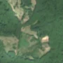
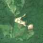

1,9 ha de pădure schimbată lângă Oncești
Între vara lui 2025 și 24 aprilie 2026, pe aproximativ 1,9 ha de pădure din comuna Voinești, lângă Oncești, județul Dâmbovița, imaginile Sentinel-2 arată că vegetația a dispărut sau s-a schimbat puternic. E o schimbare care merită verificată.
Autorizația de tăiere
de confirmat pe poze
N-am găsit o autorizație care să acopere zona, dar nu putem spune ce s-a întâmplat aici: analistul AI fie n-a văzut încă pozele, fie le-a văzut și nu e sigur. Nu dăm roșu pe o bănuială, și nici nu spunem că e în regulă. Analistul înclină spre altceva decât o tăiere, dar nu e sigur. Printre astfel de zone au fost și tăieri reale.
Ce se vede în poze: În «poza detaliată» zona marcată este în mare parte o poiană cu iarbă, cu copaci doar pe o parte, deci nu era pădure deasă. În «după» apare pământ gol, deschis la culoare, în mijlocul acestei poieni, așa că pare o curățare sau o decopertare a terenului deschis, nu o tăiere de pădure.


Înainte și după: Copernicus Sentinel-2, 10 m pe pixel, conturul zonei cu portocaliu. Poza detaliată (Esri World Imagery) e de acum 1–4 ani: arată ce era acolo înainte, nu tăierea.
Pe scurt
- Identificator
- 20260424_45115_25172
- Locul
- Oncești, comuna Voinești, județul Dâmbovița (SIRUTA 69526)
- Coordonate (centru)
- 45.11499, 25.17178 · Google Maps · OpenStreetMap
- Suprafața
- 1,9 ha (din pixeli de 10 m; ± câțiva pixeli pe margine)
- Pădurea întreagă
- în vara lui 2025 (de atunci, nori sau iarnă)
- Prima imagine cu schimbarea
- 24 aprilie 2026
- Imagini în care se vede schimbarea
- 11
- Cât de sigur e semnalul din satelit
- scăzută
- Autorizația cea mai apropiată
- APV 2500181813640 · Ocolul Silvic Codrii Verzi S.R.L., valabilă 18 septembrie 2025 – 31 decembrie 2025, la 23 m de zonă
- Terenul
- în afara amenajamentelor silvice publicate (pășune, mal de apă sau pădure privată fără amenajament în registru)
- Pădure pierdută în jur, alți ani
- 2022, 2023, 2025 (Hansen)
- Garda Forestieră
- Ploiești
Dacă vrei să verifici sau să sesizezi
- Pădurile din județul Dâmbovița sunt în grija Gărzii Forestiere Ploiești, care controlează tăierile și dă amenzile.
- Autorizația găsită în zonă e emisă de Ocolul Silvic Codrii Verzi S.R.L..
- Formularul Gărzii Forestiere Naționale primește sesizări și fără nume. Trimite linkul acestei pagini, coordonatele și pozele. Dacă tăierea e în desfășurare, sună la 112.
- Autorizațiile și transporturile de lemn se pot căuta în Inspectorul Pădurii.
Pagina arată ce se vede din satelit și ce scrie în registrul public; nu e o dovadă în sine.
Cum citezi zona
Linkul acestei pagini nu se schimbă. Dacă zona iese vreodată de pe hartă, pagina rămâne, cu data și cu ce știam despre ea.
Pădurea RO, zona 20260424_45115_25172: 1,9 ha, Oncești, comuna Voinești, județul Dâmbovița; schimbare văzută din satelit între vara lui 2025 și 24 aprilie 2026. https://iliemihai.github.io/padurea-ro/zona/20260424_45115_25172/ (consultat la [data]). Date: CC BY 4.0.
Datele zonei: GeoJSON · toate zonele: date deschise · licența CC BY 4.0.
Istoricul zonei pe hartă
Starea se poate schimba când registrul publică o autorizație sau când analistul vede poze mai bune. O ținem aici, ca un link citat să arate și ce spuneam atunci.
Pe hartă cel târziu din 5 noiembrie 2026.
- 5 noiembrie 2026 – azi · de confirmat pe poze
Detalii tehnice, pentru verificare
De ce acest nivel de încredere:
- văzută schimbată în 11 imagini diferite
- ultima dată am văzut-o intactă în vara lui 2025 (de atunci, nori sau zăpadă)
- fără părerea AI
Ce a văzut analistul cu context: În imaginea detaliată din 2024 jumătatea stângă și centrul sunt luminiș/pajiște, iar în Sentinel-2 din 2025-08-30 terenul era deja deschis la culoare; în 2026 apare un petic alb-gălbui alungit, cu o potecă subțire spre nord-est. Autorizația APV este la 23 m, cu suprapunere 0%, iar registrul indică «vegetatie», deci nu susține o tăiere rasă; ipoteza unui șantier/drum de exploatare rămâne posibilă, de aceea încrederea este scăzută.
- Placa Sentinel-2
- 35TLK
- NDVI de referință
- 0.78
- NBR de referință
- 0.51
- Scăderea în pădurea din jur
- 0.07
- Persistență
- 1.0
- NDVI / NBR după
- 0.321 / 0.115
- Analistul cu context (model)
- pasune · 0.45
Cum se calculează fiecare: metodologia.
Pune harta zonei într-un articol
Copiază codul în articol (merge în majoritatea site-urilor de știri). Sau pune doar linkul: WhatsApp, Facebook și X arată singure poza zonei.